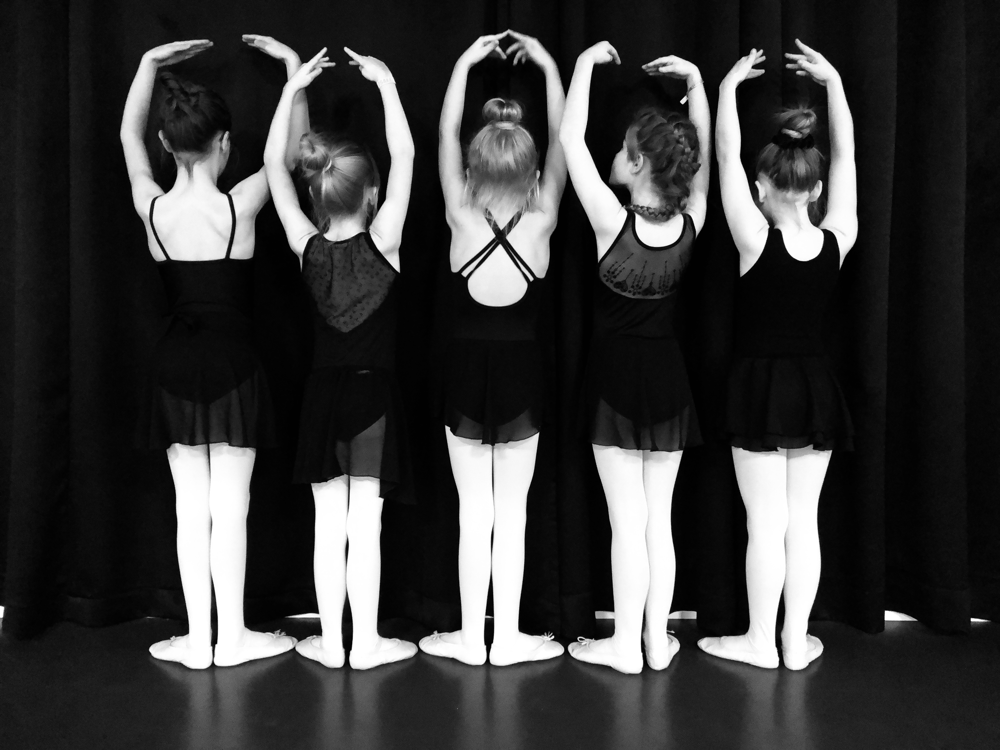

kleding
Kledingvoorschrift
Het dragen van de juiste balletkleding is voor de leerlingen essentieel om goed te kunnen bewegen en voor de docent noodzakelijk voor het geven van goede correcties. Het geeft tevens een gevoel van rust en éénheid.
De geschikte balletkleding koopt u bij theaterwinkel "PODIUM" van Welderenstraat 107 te Nijmegen. www.podium-nijmegen.nl
Leerlingen van Babs Balletschool krijgen bij PODIUM 10% korting op hun danskleding.
Algemeen:
- Het haar dient te worden opgestoken in knot of staartje, plukken uit het gezicht, geen los haar!
- Vestjes e.d. mogen in overleg
- Draag geen sieraden tijdens de les
- Kauwgom is te allen tijde verboden
Peuterdans ( 2-4 jaar P1)
- makkelijk zittende kleding, legging met hemdje of een ballet/gympakje.
- leren balletschoenen
Kinder ballet meisjes 4 t/m 6 jaar: (K1 & K2)
- Roze ballet pak hemdmodel of spaghettibandjes met vast rokje. ( bijv. de Intermezzo 3057)
- Roze ballet panty met voetjes.
- Roze leren balletschoenen
- Haren in een knot/ uit het gezicht
Kinder ballet meisjes 7 tot 9: (K3 & K4)

- Zwart balletpak hemdmodel of spaghettibandjes.
- Roze balletpanty met voetjes.
- Roze leren balletschoenen.
- Zwart rokje (niet verplicht)
- Haren in een knot/ uit het gezicht
Kinder ballet jongens ( K1 t/m K4)
- Zwarte short of legging.
- Zwart hemd (strak) of balletpak.
- Jongens: zwarte leren balletschoenen
Klassiek meisjes vanaf 9 jaar: (vanaf B1)
- Zwart balletpak.
- Roze balletpanty met voetjes.
- Roze canvas balletschoenen met splitzool.
- Zwart broekje of rokje. (niet verplicht)
- Haren in een knot/ uit het gezicht
Klassiek jongens/ heren:
- Zwarte short of legging.
- Zwart hemd (strak) of balletpak.
- Jongens: zwarte leren balletschoenen / Heren: zwarte canvas Splitzool
Klassiek dames:
- Zwart Balletpak
- Zwarte legging of roze/zwarte panty.
- Roze canvas balletschoenen met splitzool.
- Haren opgestoken.
Flamenco dames:
- Zwart aansluitend shirt of balletpak.
- Cirkelrok tot enkels (kan evt. geleend worden tijdens de les)
- zwarte flamenco schoenen (zonder spijkertjes!) of dansschoenen Capezio 653.
Flamenco heren:
- Zwarte of witte blouse of t-shirt
- lange broek - schoenen met een laag hakje (géén gymschoenen) of flamencoschoenen voor heren (zonder spijkertjes!)
Jazz ballet
- Zwart balletpak of zwart shirt (strak)
- Zwarte legging /jazzbroek of zwarte panty zonder voet.
- Zwarte (Jazz)balletschoenen.
- Haren opgestoken.
Moderne dans
- Zwart balletpak of zwarte top.
- Zwarte legging /jazzbroek of zwarte panty zonder voet.
- Blote voeten/ footundies of sokken
- Haren opgestoken.
 T-shirt van Babs Balletschool
Hoodie van Babs Balletschool
T-shirt van Babs Balletschool
Hoodie van Babs Balletschool
( evt. personalized met je eigen naam!)
te bestellen in zwart in diverse maten.( voor kids en volwassenen) bestel via babs@babsballetschool.nl
Hoe maak ik een balletknotje